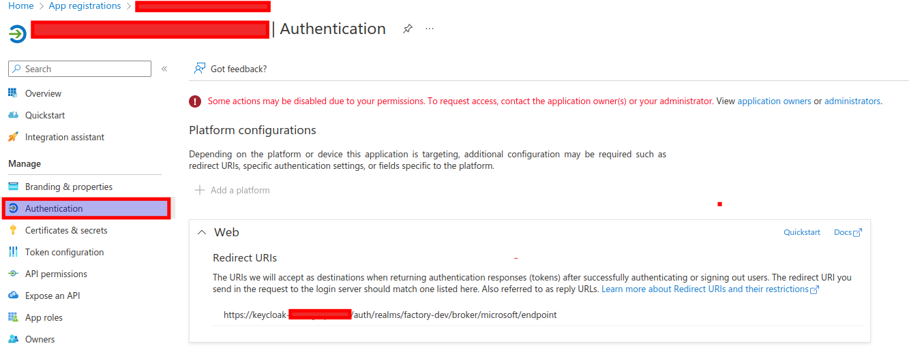
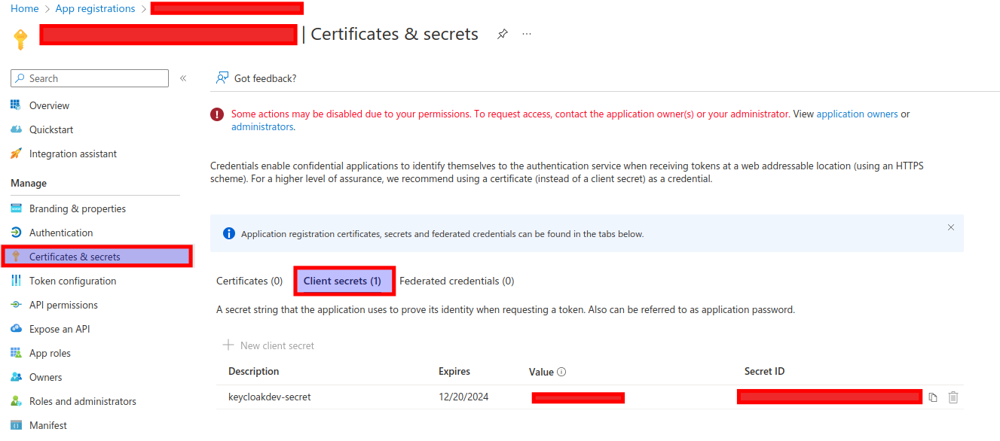
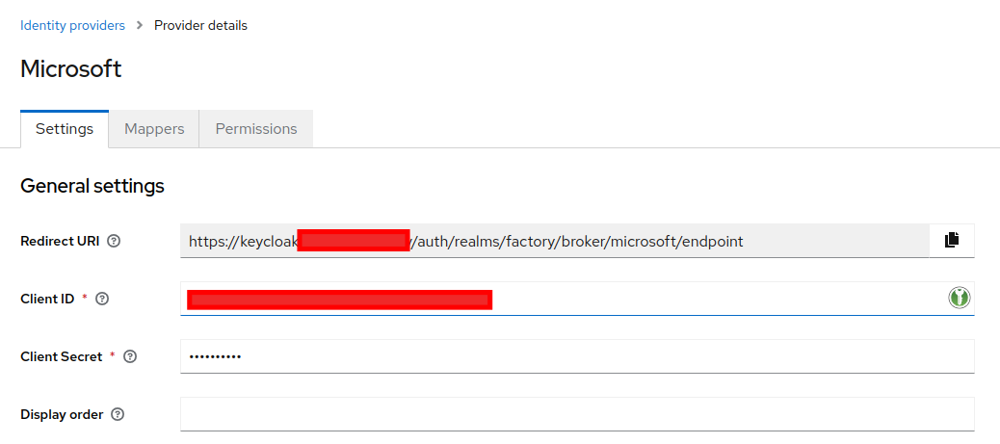

Keycloak¶
Keycloak is an open source software product that enables single sign-on (IdP) with Identity Management and Access Management for modern applications and services. This software is written in Java and supports by default SAML v2 and OpenID Connect (OIDC) / OAuth2 identity federation protocols. It is licensed from Apache and is supported by Red Hat.
From a conceptual perspective, the intent of the tool is to facilitate the protection of applications and services with little or no encryption. An IdP allows an application (often called a Service Provider or SP) to delegate its authentication.
Installation¶
We will install Keycloak on Kubernetes, for this we will use the official Helm Chart for the new version of KeycloakX.
The Helm values we will use will be:
# Ref: https://github.com/codecentric/helm-charts/blob/master/charts/keycloakx/values.yaml
command:
- "/opt/keycloak/bin/kc.sh"
- "--verbose"
- "start"
- "--http-enabled=true"
- "--http-port=8080"
- "--hostname-strict=false"
- "--hostname-strict-https=false"
- "--spi-events-listener-jboss-logging-success-level=info"
- "--spi-events-listener-jboss-logging-error-level=warn"
extraEnv: |
- name: KEYCLOAK_ADMIN
valueFrom:
secretKeyRef:
name: {{ include "keycloak.fullname" . }}-admin-creds
key: user
- name: KEYCLOAK_ADMIN_PASSWORD
valueFrom:
secretKeyRef:
name: {{ include "keycloak.fullname" . }}-admin-creds
key: password
- name: JAVA_OPTS_APPEND
value: >-
-XX:+UseContainerSupport
-XX:MaxRAMPercentage=50.0
-Djava.awt.headless=true
-Djgroups.dns.query={{ include "keycloak.fullname" . }}-headless
ingress:
enabled: true
ingressClassName: "nginx"
servicePort: http
annotations:
external-dns.alpha.kubernetes.io/hostname: keycloak.<your-domain>
nginx.ingress.kubernetes.io/proxy-buffer-size: "128k"
rules:
- host: 'keycloak.<your-domain>'
paths:
- path: '{{ tpl .Values.http.relativePath $ | trimSuffix "/" }}/'
pathType: Prefix
console:
enabled: true
ingressClassName: "nginx"
annotations:
nginx.ingress.kubernetes.io/proxy-buffer-size: "128k"
rules:
- host: 'keycloak.<your-domain>'
paths:
- path: '{{ tpl .Values.http.relativePath $ | trimSuffix "/" }}/admin'
pathType: Prefix
dbchecker:
enabled: true
database:
vendor: <database-vendor>
hostname: <database-hostname>
port: <database-port>
database: <database-name>
username: <database-username>
password: <database-password>
secrets:
admin-creds:
stringData:
user: <user>
password: <password>
If you have a realm.json file with the configuration, you can optionally add:
command:
- "/opt/keycloak/bin/kc.sh"
- "--verbose"
- "start"
# Add `--import-realm` flag
# https://www.keycloak.org/server/importExport
- "--import-realm"
- "--http-enabled=true"
- "--http-port=8080"
- "--hostname-strict=false"
- "--hostname-strict-https=false"
- "--spi-events-listener-jboss-logging-success-level=info"
- "--spi-events-listener-jboss-logging-error-level=warn"
extraVolumes: |
- name: {{ include "keycloak.fullname" . }}-realm
secret:
secretName: {{ include "keycloak.fullname" . }}-realm
extraVolumeMounts: |
- name: {{ include "keycloak.fullname" . }}-realm
mountPath: "/opt/keycloak/data/import/realm.json"
readOnly: true
subPath: realm.json
secrets:
realm:
stringData:
realm.json: <realm-file>
Login¶

Configure Microsoft Azure as Identity Provider¶
App Registration¶
Create your Azure App Registration with the following config:


Keycloak Indentity Provider¶
Create provider with the data for Azure App Registration.
